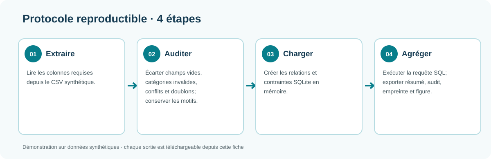
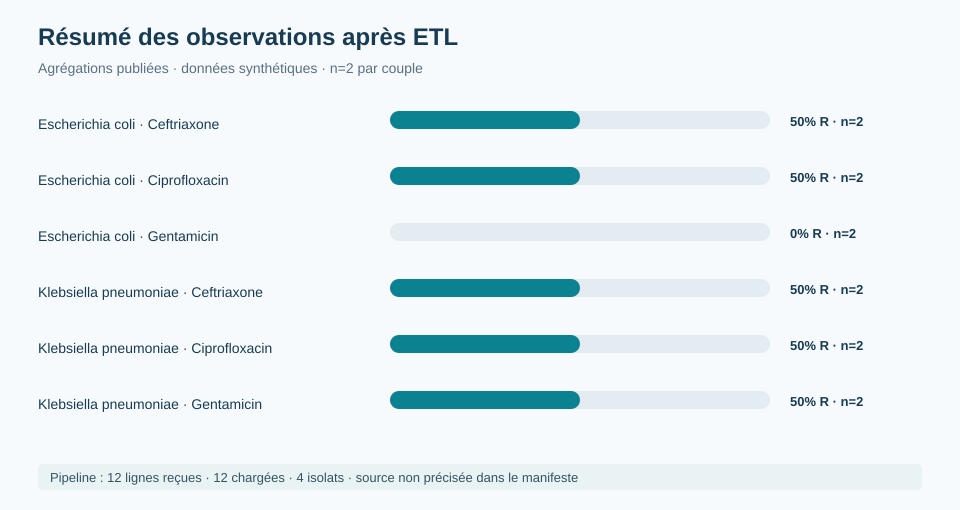

Modélisation SQL et pipeline ETL
Organiser des observations microbiologiques pour rendre les transformations, les contrôles et la provenance vérifiables.
Données synthétiques · architecture relationnellePython 3 avec SQLite intégré (aucune installation de paquet). Depuis ce dossier : python scripts/run_pipeline.py.

1. Problématique
Les données de laboratoire arrivent souvent sous forme de fichiers hétérogènes. Des libellés différents, des catégories incohérentes ou des doublons peuvent produire des tableaux apparemment corrects mais scientifiquement fragiles. Une base relationnelle bien conçue sépare les entités, impose des contrôles et permet de reconstruire les indicateurs publiés.
2. Question et objectifs
Question : comment transformer des observations d’antibiogramme en résultats agrégés dont la source et les contrôles sont explicites ?
- définir une structure relationnelle pour les organismes, antibiotiques et résultats ;
- harmoniser les catégories de sensibilité ;
- identifier les valeurs manquantes, doublons et incohérences ;
- produire des agrégations SQL reproductibles ;
- conserver un manifeste de provenance pour relier les sorties à leur entrée.
3. Revue de lecture
Dans un système de données de santé, la qualité ne se limite pas à l’absence de cellules vides. Elle comprend l’exactitude, la complétude, la cohérence, l’unicité, la traçabilité et l’aptitude à l’usage. Les règles de validation doivent être définies avant l’agrégation : une catégorie inconnue n’est pas automatiquement une catégorie résistante et un doublon ne doit pas être supprimé sans conserver la décision.
La provenance complète cette démarche. Un fichier de sortie peut être mathématiquement correct tout en étant impossible à auditer si son origine, sa date, son format ou la transformation appliquée ne sont pas documentés. Le manifeste publié dans ce projet illustre cette exigence ; le pipeline et la requête sont fournis avec les données synthétiques.
4. Architecture SQL et traçabilité
SQL signifie Structured Query Language. Il s’agit d’un langage déclaratif : on décrit les données à sélectionner, relier, filtrer ou agréger, puis le moteur exécute la requête. Dans ce projet, cette séparation rend le calcul lisible pour un autre analyste et évite de dépendre d’une modification manuelle d’un tableau.
La table des observations contient une ligne par résultat, avec des champs contrôlés pour l’organisme, l’antibiotique et la catégorie S/I/R. Des tables de référence peuvent ensuite documenter les libellés, les unités et les règles de validation. Les clés et contraintes préviennent les enregistrements orphelins ; les requêtes de contrôle recherchent les valeurs nulles, doublons et catégories inconnues.
La traçabilité relie le fichier d’entrée à la table chargée, puis la table aux agrégations publiées. Pour chaque sortie, on doit pouvoir répondre à la date d’extraction, au fichier source, au nombre de lignes importées, aux transformations appliquées et aux anomalies conservées dans l’audit.
5. Méthode ETL
Extraire
Lire les fichiers source, identifier les colonnes et conserver les métadonnées utiles à la traçabilité.
Transformer
Nettoyer les libellés, normaliser les catégories S/I/R et contrôler les domaines de valeurs.
Charger
Insérer les enregistrements dans des tables relationnelles avec des clés et des relations explicites.
Contrôler
Comparer les comptages avant et après transformation, isoler les anomalies et produire un audit lisible.

Règles ETL et intégrité relationnelle
- Schéma d’entrée : identifiant d’isolat, organisme, antibiotique et résultat sont obligatoires; les libellés sont nettoyés par suppression des espaces périphériques.
- Domaine : résultat normalisé en S/I/R; les autres valeurs et les champs incomplets sont inscrits dans l’audit et exclus des agrégations.
- Identité : un identifiant d’isolat ne peut pas être associé à deux organismes. La paire isolat–antibiotique est unique; un doublon est conservé comme anomalie, pas fusionné.
- Chargement : tables relationnelles avec clés étrangères et contraintes d’unicité; SQLite est lancé en mémoire, donc aucune base locale persistante n’est créée.
- Agrégation : n = S+I+R; la proportion R = R/n × 100. La requête n’applique aucun référentiel clinique ni déduplication au niveau patient.
- Traçabilité : SHA-256 relie le manifeste à l’octet du fichier d’entrée; ce hash vérifie l’identité du fichier, pas son authenticité biologique.
6. Modèle relationnel et résultats
Le modèle distingue les objets qui ne doivent pas être confondus : une observation d’antibiogramme, un organisme, un antibiotique et une catégorie de résultat. Les clés identifient chaque enregistrement ; les relations relient l’observation à ses tables de référence ; les contraintes d’intégrité empêchent une catégorie inconnue ou une relation sans parent.
| Élément | Rôle | Contrôle |
|---|---|---|
| Observation | Résultat S/I/R associé à un couple | identifiant unique et champs obligatoires |
| Organisme | Référentiel des microorganismes | clé référencée par l’observation |
| Antibiotique | Référentiel des molécules testées | libellé harmonisé |
| Résultat | Catégorie interprétée | valeur limitée à S, I ou R |
Le pipeline compare les volumes à chaque étape : lignes reçues, lignes transformées, lignes acceptées et lignes rejetées. Une ligne rejetée n’est pas effacée : elle est comptée et décrite dans l’audit afin d’expliquer l’écart entre l’entrée et la sortie.
Le résumé SQL présente les agrégations par organisme et antibiotique. Le fichier d’audit liste les problèmes détectés, tandis que le manifeste décrit la provenance du résultat. Ensemble, ces sorties permettent de distinguer la mesure calculée, les réserves de qualité et l’origine du fichier.
Résultats SQL visibles
| Organisme | Antibiotique | n | R | I | S | R (%) |
|---|---|---|---|---|---|---|
| Escherichia coli | Ceftriaxone | 32 | 16 | 16 | 0 | 50.0 |
| Escherichia coli | Ciprofloxacin | 32 | 16 | 0 | 16 | 50.0 |
| Escherichia coli | Gentamicin | 32 | 0 | 0 | 32 | 0.0 |
| Klebsiella pneumoniae | Ceftriaxone | 32 | 16 | 0 | 16 | 50.0 |
| Klebsiella pneumoniae | Ciprofloxacin | 32 | 16 | 0 | 16 | 50.0 |
| Klebsiella pneumoniae | Gentamicin | 31 | 15 | 16 | 0 | 48.4 |
Les catégories répétées pour équilibrer les exercices sont un motif synthétique de programmation, et ne modélisent pas un échantillonnage microbiologique réel.

Provenance : le manifeste identifie le fichier de démonstration synthétique et son empreinte SHA-256. Aucune source clinique ou épidémiologique n’est utilisée.
Résumé SQL · Audit des problèmes qualité · Manifeste de provenance
7. SQL analytique au-delà du chargement
Le dépôt comprend une seconde feuille avec trois patrons : CTE pour structurer un calcul, fonction fenêtre RANK() pour classer les proportions par organisme en conservant les égalités, et produit cartésien avec jointure externe pour repérer les couples sans test. Ces requêtes sont des exercices descriptifs sur données synthétiques.
Requêtes avancées CTE, classement et couverture
8. Interprétation et limites
Une requête SQL garantit que la transformation est explicite et répétable ; elle ne garantit pas que les données source représentent correctement la réalité clinique. Une empreinte de fichier vérifie l’intégrité du fichier reçu, pas la validité biologique de son contenu. Dans une application réelle, il faudrait ajouter la gestion des identifiants patients, les règles de déduplication, les dates de prélèvement, le référentiel d’antibiogramme et des contrôles d’accès adaptés.
8. Conclusion
La modélisation et la provenance rendent une analyse biomédicale plus lisible pour un autre analyste, un biologiste ou un responsable qualité. Elles permettent de répondre à trois questions essentielles : quelles données ont été utilisées, quelles transformations ont été appliquées et quelles anomalies ont été rencontrées ?
9. Références de lecture
- World Health Organization. WHO guidelines on data quality assurance.
- Kimball R, Ross M. The Data Warehouse Toolkit.
- ISO 8000. Data quality.
10. Références et ressources
- SQLite, SQL language reference.
- SQLite, Foreign keys.
- SQLite, Window functions.
- W3C, Tabular Data Model and Metadata.
- W3C, PROV provenance overview.
- WHO, GLASS-AMR methodology.
- WHO, GLASS surveillance manual.
- ISO, ISO 8000 data quality.
- HL7, FHIR specification.
- SQLite, Query planner.
Les données et sorties sont synthétiques et servent à illustrer une architecture d’analyse.